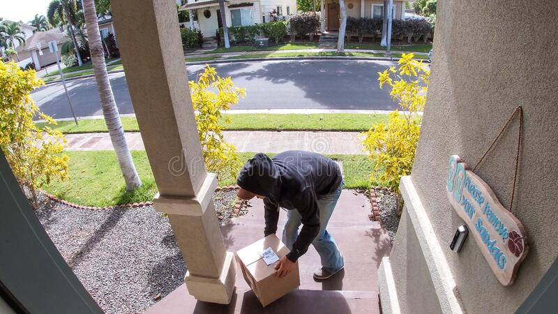

Front Door
Time: 2021-07-28 04:03:20.433019
Camera + Explaining
We aim to design a home security system that is privately owned and operated by the user. It consists of the doorbell interface, which includes the classic buzzer, a microphone, speaker, and motion detection, as well as the residential interface, which consists of a webpage that the resident can access to view images of the person at their doorstep as well as speak to and hear them. Furthermore, we will design it to be open source in order for residents to comfortably use the technology and feel as if they aren’t sacrificing their privacy.
Camera + Explaining
Recordings: